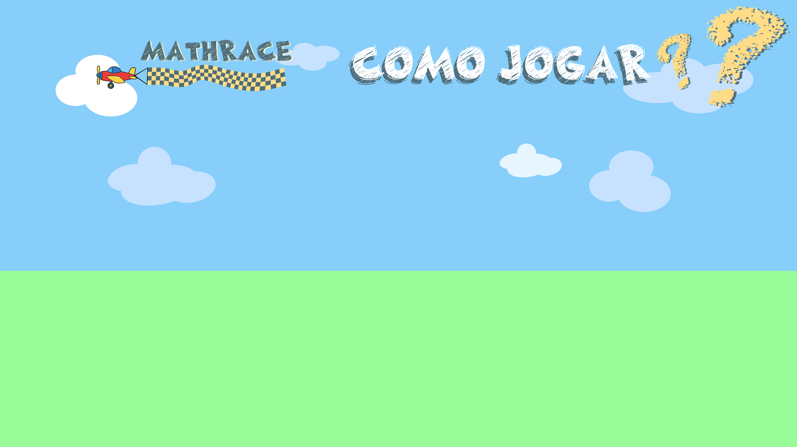

No menu principal, clique no botão “COMEÇAR” para iniciar.
Arraste o mouse até o mapa desejado e clique para escolher a pista em que quer correr.
Você verá uma sinaleira verde com 3 luzes;
Quando as três luzes acenderem e a sinaleira desaparecer, a corrida começa!
No canto inferior aparecerá uma equação matemática;
À direita, haverá 4 quadrados com opções de resposta;
Clique na opção correta o mais rápido possível para ganhar velocidade e pontos.
→ Clique em “TENTE NOVAMENTE” para jogar de novo.
→ Clique no “X” para voltar ao menu principal.